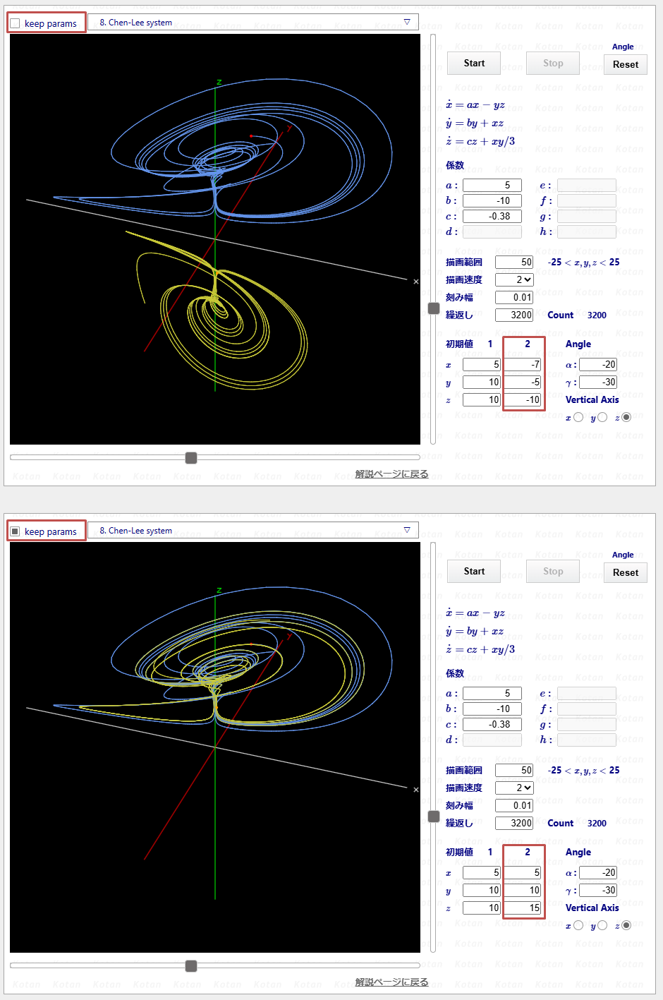

微分方程式の解軌道 3D 可視化ツール : 簡易ドキュメント
微分方程式の解軌道
3D 可視化ツール 簡易ドキュメント
このツールは3次元の微分方程式の解軌道を描画します。 2次元でも不思議な軌道を描く方程式がありますが、 3次元になると、一見簡単そうな方程式でも 特定のパラメータと初期値によってカオス的な解軌道を描くものがあります。 解は有界であるのに何とも気まぐれな軌道を持つ方程式です。 ネットで調べて、不思議な性質を持つ方程式を集めてみました。 解軌道の描画は、4次のrunge-kutta法で近似を行っています。 初期値として2点を指定し、時間経過に伴う軌道を動的に描画していきます。
描画が終了すると、アングルと垂直軸を変更することで、様々な角度から解軌道を観察することができます。
それでは、セレクトボックスに表示されるタイトルに従って、ざっくりと説明します。 と、言いたいところですが、私にはとてもそのような知識はないので、本当に簡単なコメントと、 方程式が紹介されているサイトのurlを記すことにします。
( 描画ページではLocal Storageを使用しています。脚注 [1] 参照。)
[01] Lorenz system
\[ \begin{array}{l} \dot{x} = ay - ax \\ \dot{y} = bx - xz - y \\ \dot{z} = xy - cz \end{array}\]

私がLorenz system を初めて知ったのは、1980年代の後半です。 カオスとかフラクタルがはやった頃です。 ブルーバックスでこの方程式についてのかなり詳しい説明を読んだことがあり、 森本光生氏の 「パソコンによる微分方程式」に載っていた描画プログラムを 3次元版に拡張して描画させた記憶があります。N88-BASICってご存じですか(^^;。
Lorenz system が有名になったのは、解を得るための初期値がほんの少し違っただけで、 有界であるにも関わらず、全く思いにもよらない軌道を描くことの初期値鋭敏性について、 バタフライエフェクトとして知られるようになったことだと思います。 バタフライの名称は解軌道が形成するアトラクターが蝶が羽を広げたような形状に似ていることに由来しています。 最近では、NHKがやたらにバラフライエフェクトを連発していますが...
Lorenz system は蝶が羽を広げたような単一のストレンジアトラクターを形成します。 以下に示したパラメータの場合、初期値(解軌道の出発点)がアトラクターから離れていても、 次第に蝶に吸い込まれていきます。これは Lorenz system の特徴です。
Lorenz system については、検索すればいくらでもヒットします。一応、下記のサイトを挙げておきます。
1. ローレンツ方程式
2. バタフライ効果
パラメーターは$a = 10.0, b = 28.0, c = 8.0 / 3.0$ のパターンがよく知られています。
シミュレーションツールでも、デフォルトでこの値を使用しています。
初期値は(0, 1, 2)、(0, 1, 2.01)としています。
[02] Thomas system
\[ \begin{array}{l} \dot{x} = \sin y - ax \\ \dot{y} = \sin z - ay \\ \dot{z} = \sin x - az \end{array}\]

この式がカオスになるとはにわかには信じられませんが、カオスになってしまいます。
Thomas system については、下記のサイトを参照してください。
1. Thomas' cyclically symmetric attractor
シミュレーションツールでは、パラメーターは$a = 0.21$ 、 初期値は $(x, y, z) = (0, 1, 2)、(0, -1, -2)$ としています。 この状態では、原点対称に2つのアトラクターがが存在します。 $a$の値を大きくすると(3など)、解軌道は1点に収束します。 $a$の値を小さくすると(1.9など)原点対称性を保ちながら、解軌道が混ざり合いながら、1つのアトラクターを形成し、 カオスな動きをします。
これは、$a$が大きければ、$-ax, -ay, -az$ の減衰項が強いため、ベイズン境界を越えることができず、 2つのアトラクターに分かれるのですが、 $a$が小さくなると振動($\sin$)が強くなり、境界を越えて、動き回れるようになるため、 1つのアトラクターを形成するようになると思われます。
[03] Four-Wing system
\[ \begin{array}{l} \dot{x} = ax + yz \\ \dot{y} = bx + cy - xz \\ \dot{z} = -z -xy \end{array}\]

Lorenz systemが2つ合体したような軌道が描かれます。 この方程式が紹介されている最初に見つけたサイトを参考にしたのですが、 他のサイトで紹介されているFour-Wingの式とは若干異なります。 しかし、実際に描画すれば、まさにFour-Wingです。
Four-Wing system については、下記のサイトが最初に見つけたページです。
シミュレーションツールでは、パラメーターは$a = 0.2, b = 0.01, c= -0.4$ 、 初期値は $(x, y, z) = (0, 1, 2)、(0, 1, 2.01)$ としています。
[04] Halvorsen system
\[ \begin{array}{l} \dot{x} = -ax -4y -4z + y^2 \\ \dot{y} = -ay -4z -4x + z^2 \\ \dot{z} = -az -4x -4y + x^2 \end{array}\]

この式もThomasモデルと似た感じで、かなり規則的な変化をしていますが、カオスになります。 描画速度を上げると分かりづらくなりますが、初期値鋭敏性を備えています。
Halvorsen system については、下記のサイトを参照してください。
シミュレーションツールでは、パラメーターは$a = 1.499$ 、 初期値は $(x, y, z) = (0, 1, 2)、(0, 1, 2.01)$ としています。
[05] Rössler system
\[ \begin{array}{l} \dot{x} = -(y + z) \\ \dot{y} = x + ay \\ \dot{z} = b + z(x - c) \end{array}\]

ドイツの生物学者 Otto Rössler によって 1976年の論文で提唱されたものです。
Rössler system は非線形項が第3式の $zx$ のみという非常に単純なものであるにも関わらず、 カオスを発生します。 元々はカオスの研究中に発見されたそうですが、 後に化学反応の平衡をモデル化するのに役立つことが分かったとのことです。
Rössler system については、下記のサイトを参照してください。
シミュレーションツールでは、パラメーターは$a = 0.2, b = 0.2, c = 5.7$ 、 初期値は $(x, y, z) = (0, 1, 2)、(0, 1, 2.01)$ としています。
[06] Sprott B system
\[ \begin{array}{l} \dot{x} = ayz \\ \dot{y} = x - by \\ \dot{z} = c - xy \end{array}\]

Julien C. Sprott による「最小カオス系探索」で設計され方程式で、いくつもの系が存在します。 非常にコンパクトであるにも関わらず、カオスになるように設計されており、 初期値鋭敏性も備えています。
Sprott B systemについては、下記のサイトを参照してください。
1. Simple Chaotic Flow GIF Animations
シミュレーションツールでは、パラメーターは$a = 0.4, b = 1.2, c = 1$ 、 初期値は $(x, y, z) = (0.1, 1, 1)、(0.11, 1, 1)$ としています。
[07] Rabinovich-Fabrikant system
\[ \begin{array}{l} \dot{x} = y(z - 1 + x^2) + bx \\ \dot{y} = x(3z + 1 - x^2) + by \\ \dot{z} = -2z(a + xy) \end{array}\]

解軌道は3つのアトラクターを複雑に動きます。Lorenz system同様に、初期値鋭敏性が見られます。
Rabinovich-Fabrikant systemについては、下記のサイトを参照してください。
1. Rabinovich–Fabrikant equations
シミュレーションツールでは、パラメーターは$a = 0.14, b = 0.1$ 、 初期値は $(x, y, z) = (-1, 0.9, 0.6)、(-1, 0.9, 0.60001)$ としています。
[08] Chen-Lee system
\[ \begin{array}{l} \dot{x} = ax - yz \\ \dot{y} = by + xz \\ \dot{z} = cz + xy/3 \end{array}\]

このsystemは初期値鋭敏性を備え、アトラクターの中でカオス軌道を描きます。 Lorenz systemが単一のアトラクターであり、初期点が異なっていても、 最終的には同じバタフライに吸い込まれるのに対して、 Chen-Lee systemは複数のアトラクターを持ち、 初期点によって、どのアトラクターへ吸い込まれるか決まるようです。
Chen-Lee systemについては、下記のサイトを参照してください。
1. 3D Chaotic Attractors – The Sequelaen Collection
シミュレーションツールでは、パラメーターは$a = 5.0, b = -10.0, c = -0.38$ 、 初期値は $(x, y, z) = (5, 10, 10)、(-7, -5, -10)$ としています。
[09] Chen system
\[ \begin{array}{l} \dot{x} = a(y - x) \\ \dot{y} = (c - a)x - xz + cy \\ \dot{z} = xy -bz \end{array} \]

中国の数学者 Chen Guanrong によって 提唱された方程式で、Lorenz系の非線形強化版と考えられます。 Lorenz system 同様、単一のアトラクターと初期値鋭敏性を持ちます。
Chen system は通信暗号の同期や制御に応用されています。
Chen systemについては、下記のサイトを参照してください。
1. Fully Integrated Chen Chaotic Oscillation System
シミュレーションツールでは、パラメーターは$a = 40, b = 3, c = 28$ 、 初期値は $(x, y, z) = (-0.1, 0.5, -0.6)、(-0.1, 0.5, -0.601)$ としています。
[10] Chua system
\[ \begin{array}{l} \dot{x} = a(y - x - f(x)) \\ \dot{y} = x - y + z \\ \dot{z} = -by \\[4pt] \hspace{1em} \text{where} \\ f(x) = cx + \tfrac{1}{2}(d - c)(|x + 1| - |x - 1|) \end{array} \]

中国系アメリカ人のコンピューター科学者 Leon O. Chua が カオスな挙動を示す Chua回路 を1983年に発明しました。Chua回路はコンデンサ、インダクタ、抵抗、非線形素子(Chua diode)で構築可能です。 更にChua回路のダイナミクスは微分方程式で正確にモデル化できるため、 Chua系はカオスを伴う方程式としては珍しく現実世界で確認可能な系といえます。
Chua systemについては、下記のサイトを参照してください。
シミュレーションツールでは、パラメーターは$a = 15.41, b = 28, c = -0.714, d = -1.143$ 、 初期値は $(x, y, z) = (-0.000001, 0, 0)、(-0.0000011, 0, 0)$ としています。
このパラメータと初期値ではダブルスクロールのアトラクターが現れ、 初期値鋭敏性を備えていますが、 パラメータを調整することで、シングルスクロール、周期軌道のアトラクターも出現します。
[11] Langford system
\[ \begin{array}{l} \dot{x} = (z - a)x - by \\ \dot{y} = bx + (z - a)y \\ \dot{z} = c + dz - z^3/3 - (x^2 + y^2)(1 + ex) + fzx^3 \end{array}\]

一般に準周期アトラクターの例として、引き合いに出されることが多い方程式です。 よく似た方程式に Aizawa system があります。係数と非線形項の一部が異なりますが、 両者ともほぼ同じ性質を備えています。
Langford systemについては、下記のサイトを参照してください。
1. Numerical Studies of Torus Bifurcations
シミュレーションツールでは、パラメーターは$a = 0.7, b = 3.5, c = 0.6, d = 1, e = 0.25, f = 0$ 、 初期値は $(x, y, z) = (1, 1, 1)、(1, 1, 1.1)$ としています。 この場合、解軌道は準周期的であり、トーラスの表面を動き、非常に美しいアトラクターを形成します。 しかし、係数 $c$ が 0.8 位になると、トーラスを壊し始め、カオスに移行します。 このときは、初期値鋭敏性を持ちます。
[12] Dadras system
\[ \begin{array}{l} \dot{x} = y -ax + byz \\ \dot{y} = cy -xz + z \\ \dot{z} = dxy -ez \end{array}\]

2009年にDadrasとMomeniによって紹介された方程式で、マルチスクロールのアトラクターが生成されます。
Dadras systemについては、下記のサイトを参照してください。
1. A novel three-dimensional autonomous chaotic system generating two, three and four-scroll attractors
シミュレーションツールでは、パラメーターは$a = 3, b = 2.7, c = 1.7, d = 2, e = 5.4$ 、 初期値は $(x, y, z) = (1, 1, 0)、(1, 1, 0.1)$ としています。 この場合は、4ストロークになりますが、$e$を$5.4$から$9$位に変更すると、3スクロールに変化します。
[1.]
描画ページでは、Local Storageを利用して選択された方程式のパラメータを保持する機能を持ちます。 近似曲線の出発点の変更や係数の変更で、解軌道ががらりと変わります。 方程式ごとに参考に挙げたサイトでは、詳しく解説している所もあります。
パラメータの変更を始めると、少しずつ調整しながら解軌道の変化を見ることになります。 私の場合は、結構時間をかけて調整するので、 「続きは明日調べよう」なんてことがしょっちゅうあります。 こんな時、それまで設定したパラメータが保存されていると非常に便利です。 また、「すごい軌道を描くなぁ」と思われるパラメータが見つかった場合は、 パラメータが保存されていれば、時間が経ってから再描画させたとき、すごい解軌道が正確に再現されます。
そこで、以下に示すように選択された方程式のパラメータを保持するためのチェックボックスを設置しました。

図の中で「keep params」の右に見えるのがチェックボックスです。
図の上半分は、チェックが入っていない状態で、予め設定されているパラメータが表示されています。
図の下半分は、チェックが入っている状態で、この図では解軌道の出発点が変更されています。
チェックボックスは方程式毎に独立しています。 ローカルストレージに保存されるデータは、以下の通りです。
- <1>どの方程式にチェックがついているか
- <2>チェックがついている方程式のパラメータが変更された場合は、そのデータ
- <3>ブラウザが最後に表示していた方程式(番号で管理)
画面に表示されている方程式でパラメータを変更したい場合は、 チェックを入れてから目的のパラメータを変更すると、自動的にローカルストレージに保存されます。
描画ページのショートカットを作り、一旦ブラウザを閉じて開き直すと、 先ほど表示されていたページが、パラメータの変更も反映された状態で開きます。
チェックをはずしてページをリロードすると、初期設定のパラメータが表示されます。 元の状態に戻したくなった場合は、チェックをはずせばいつでも戻ることができます。
もう一度チェックしてページをリロードすると、パラメータの変更が反映された状態でページが開きます。
私的にはなかなか便利な機能ではないかと思っているのですが、 いずれかのページでチェックを入れると、ローカルストレージにデータが記録されるようになります。 全てのページのチェックをはずしても、データが残ります。 全てのページのチェックをはずしても、改めてブラウザを開くと、 最後に表示されていた方程式のページが開きます。
もし、ローカルストレージから描画ページのデータを完全に削除したい場合は、 以下の手順にしたがってください。ここではgoogle chromeを例に取ります。
- <1>画面右上の設定ボタン(縦の3点マーク)をクリック
- <2>その他のツール → デベロッパーツール を選択するとデベロッパーツールの画面が開く
- <3>メニューから"アプリケーション"タブをクリック
- <4>"キー" から以下をそれぞれ右クリックして "削除" をクリック
- kkoDeq3D_CheckFlg
- kkoDeq3D_Data
- kkoDeq3D_LastSelected
- <5>ローカルストレージから描画ページのデータが全て削除される
ローカルストレージから描画ページ用の全てのデータを削除した後、 ブラウザをリロードすると、方程式は未選択になるので、 方程式選択ボックスには「system を選択」と表示されます。
これで、完全に初期状態に戻ったことになります。